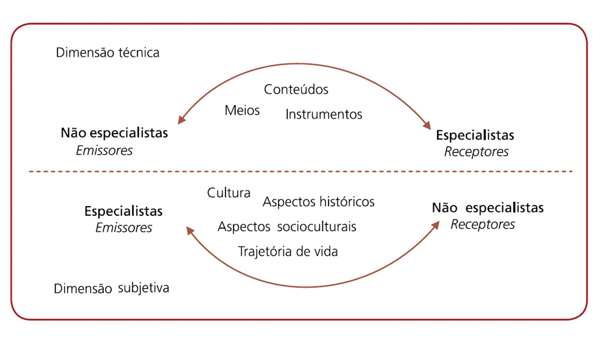
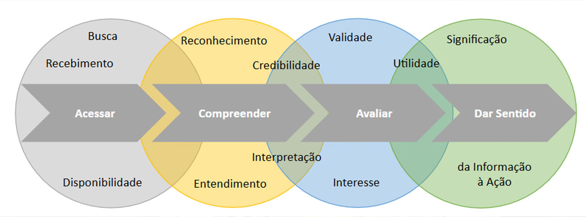

MÓDULO 3 | AULA 6 Comunicação de risco à saúde
Introdução
A comunicação de riscos engloba um conjunto de saberes e práticas voltados ao intercâmbio de mensagens sobre situação de potencial ou iminente ameaça, visando contribuir para a tomada de decisão informada. Segundo Krimsky & Plough (1988), é um tipo de comunicação com o propósito de “informar indivíduos sobre a existência, natureza, forma, grandeza ou aceitabilidade de riscos”.
“um processo interativo de troca de informações entre indivíduos, grupos e instituições; geralmente envolve múltiplas mensagens sobre a natureza dos riscos ou expressa preocupações, opiniões, ou ainda reações às mensagens sobre riscos e acordos institucionais e legais para o gerenciamento de riscos”.
Conselho Nacional de Pesquisas dos EUA (National Research Council, 1989)
Como em qualquer tipo de comunicação, o ato de comunicar riscos deve estar inserido em um processo dialógico, interativo e dinâmico, que envolve duas dimensões distintas.
Ela é a mais conhecida e que engloba todos os aspectos ligados à elaboração de mensagens, os meios e mídias utilizados para o seu intercâmbio, os materiais que darão suporte às ações comunicativas e as técnicas e protocolos utilizados para a comunicação de riscos.
Ocupa posição marginal na elaboração de uma estratégia de comunicação de riscos. Trata-se do ato comunicativo, ou seja, todos os fatores “não técnicos” que podem influenciar o processo de comunicação e que, em última análise, são determinantes da construção de conhecimento que se pretende.
Como exemplos dos fatores que compõem a dimensão subjetiva da comunicação de riscos podemos destacar:
- os padrões culturais compartilhados em um grupo ou sociedade;
- aspectos históricos que marcaram a constituição do grupo social em que os indivíduos estão inseridos;
- a influência das estruturas sociais presentes e atuantes em um determinado território onde se produzem os riscos, objetos da comunicação;
- e a trajetória de vida dos atores envolvidos no processo comunicativo, entre diversos outros fatores.
Ao integrar as dimensões técnica e subjetiva, a comunicação de riscos pode ser compreendida como um processo interativo e dialógico, no qual diferentes atores constroem sentidos sobre os riscos com o objetivo de antecipá-los ou reduzir seus efeitos.
A Figura 1 apresenta esse processo comunicativo, destacando a interação entre especialistas e não especialistas, que podem assumir, em diferentes momentos, os papéis de emissores e receptores das mensagens. Na dimensão técnica, predominam os conteúdos científicos, os meios e os instrumentos de comunicação. Já na dimensão subjetiva, entram em jogo fatores como cultura, aspectos históricos e socioculturais e trajetórias de vida, que influenciam diretamente a interpretação das informações.
Por isso, toda estratégia de comunicação de riscos precisa ir além da simples transmissão de informações técnicas. É fundamental garantir que a mensagem seja compreensível, relevante e significativa para o público ao qual se destina. Somente assim a comunicação de riscos poderá alcançar seus objetivos de forma efetiva, contribuindo para a prevenção de danos e para a promoção da saúde e da proteção social.

Construindo sentidos na Comunicação de Riscos: Especialistas, Públicos e Diferenças Culturais
A comunicação de riscos, como visto, constitui um espaço de construção de sentidos, no qual um conjunto de mensagens são intercambiadas entre indivíduos com diferentes padrões culturais e trajetórias de vida e aprendizado bastante distintas, sobretudo quando comparamos aqueles indivíduos que se situam no grupo anteriormente definido de especialistas (de diferentes áreas do saber, mas geralmente associados às instituições que têm a responsabilidade sobre o gerenciamento dos riscos em questão) aos não-especialistas (indivíduos que não “aprenderam a aprender” da mesma forma que um técnico ou especialista e que, frequentemente, se baseia em parâmetros bastantes distintos do outro para a tomada de decisões). Tamanho é o abismo que separa esses dois grandes grupos que Covello e Sandman (2001), pesquisadores estadunidenses que estudam há muitos anos a comunicação de riscos, definem, de forma categórica: os riscos que matam as pessoas e os riscos que as alarmam são completamente diferentes.
Partindo desse princípio, a comunicação de riscos é um processo que envolve a interação entre especialistas e não especialistas e é influenciado pela dimensão subjetiva de todos os envolvidos. Para que seja eficaz, esse processo depende da identificação de elementos de significação comum, isto é, pontos que possam ser reconhecidos por todos os atores da situação-problema, independentemente de sua formação ou familiaridade com o tema. O respeito aos padrões culturais e às realidades dos territórios onde as situações de risco são produzidas e vivenciadas é indispensável para o sucesso das estratégias de comunicação de riscos, seja qual for o público ou a natureza do risco.
Podemos citar como exemplo, a comunicação de riscos no Brasil. Considerando a grande extensão territorial, a comunicação de riscos varia conforme o território, as condições de vida e as experiências da população não são as mesmas em todas as regiões. Por isso, uma estratégia eficaz em um local pode não funcionar em outro.
Na região Norte, onde comunidades convivem historicamente com enchentes, doenças tropicais e contaminação ambiental, a comunicação tende a ser mais oral, presencial e contextualizada. As mensagens utilizam linguagem simples, exemplos do cotidiano e a mediação de agentes comunitários, com foco em orientar ações práticas imediatas.
Já na região Sul, a comunicação de riscos ocorre de forma mais técnica e institucional, baseada em boletins oficiais, dados científicos, mapas e alertas digitais. A ênfase está na autoridade das instituições e na divulgação de informações padronizadas.
Essas diferenças mostram que comunicar riscos não é apenas informar, mas considerar a percepção, a cultura e o contexto social da população.
Para melhor compreender o papel da comunicação de riscos na articulação de saberes entre especialistas e não-especialistas, com um propósito específico de antecipar-se a determinados riscos ou mitigar danos, recomenda-se, como recurso de aprendizagem complementar, o vídeo “Risk Communication”, elaborado pela Autoridade Europeia de Segurança dos Alimentos (EFSA).
Comunicação de Riscos: um processo de construção de sentidos para a tomada de decisão
A comunicação de riscos, como qualquer ato dialógico, não é uma ação restrita à transferência de informações (mesmo que estas informações sejam transferidas em duas vias). É um processo de construção de sentidos sobre um determinado risco que, como visto anteriormente, é fortemente influenciado pela dimensão subjetiva. Uma mensagem só será significada se os indivíduos aos quais ela se destina encontrarem elementos reconhecíveis que os levem a ter interesse em fazer uso de tal informação para a tomada de decisão - o processo de significação como forma de partir da informação para a ação. A Figura 2 descreve, de forma esquemática e simplificada, o processo de significação de informações que um indivíduo percorre desde o momento em que tem acesso a uma informação até o seu uso para realizar uma ação (tomada de decisão informada).
Nesse processo, a compreensão de uma mensagem é apenas parte do processo de significação e, portanto, é necessário que a comunicação de riscos possibilite outros elementos para além de uma informação clara e compreensível: é preciso que se estabeleça as condições para que o indivíduo, ao ter acesso e compreender uma determinada informação, possa avaliar a pertinência e a utilidade da mesma e, a partir dessa avaliação, possa tomar a decisão de seguir o que a informação recomenda que, no caso da comunicação de riscos, frequentemente resulta em ações para se antecipar a um evento potencialmente danoso ou para o gerenciamento e a mitigação de danos.
Assim concebida, a comunicação de riscos deve servir como ponto de referência, em torno do qual as preocupações desses atores - especialistas e não-especialistas - devem ser expostas, exploradas e consensuadas.

Para saber mais sobre como a comunicação de riscos deve servir como um espaço para a produção de significados comuns, recomendamos a leitura do texto de Peres e colaboradores (2013) que registra o desenho de uma estratégia de comunicação de riscos sobre o uso de agrotóxicos por agricultores do estado do Rio de Janeiro.
- Para entender mais, leia o artigo “Design of risk communication strategies based on risk perception among farmers exposed to pesticides in Rio de Janeiro State, Brazil”.
Observação: o artigo está disponível em inglês. Caso necessário, o aluno pode acessar o conteúdo normalmente e utilizar a opção “Traduzir para o português” do Google Chrome, clicando com o botão direito do mouse na página ou pela barra de tradução do navegador.
A comunicação de riscos é específica e tem um propósito bem definido
Não existe mensagem, por mais ampla e abrangente que seja, capaz de ser universalmente compreendida, seja por padrões de linguagem e escrita, seja pela natureza do conteúdo nela presente. A garantia do êxito de uma estratégia de comunicação de riscos depende da consideração, sobretudo por parte dos especialistas responsáveis pela elaboração de tal estratégia, que as mensagens produzidas para tal fim sejam específicas e construídas levando em consideração os diferentes contextos e grupos (ou indivíduos) nos quais serão trabalhadas.
Situações de exposição a um mesmo agente tóxico, ocorridas em contextos semelhantes, porém em territórios distintos, frequentemente resultam em desfechos com notadas diferenças, dado que as formas como os indivíduos, envolvidos nessas distintas ocorrências, percebem e interpretam os potenciais riscos são bastante diversas, demandando especificidade das estratégias de comunicação de riscos construídas em resposta a cada evento. O que nos leva a outro princípio:
Exemplo
Em uma comunidade ribeirinha, o consumo de peixe contaminado por mercúrio está associado à subsistência e à cultura local, exigindo uma comunicação de riscos que respeite essas práticas e indique formas de reduzir a exposição. Já em um contexto urbano, onde o consumo de peixe é opcional, a comunicação pode ser mais direta, focando na escolha de espécies seguras. Embora o agente tóxico seja o mesmo, a percepção do risco e as possibilidades de ação são diferentes. Por isso, as estratégias de comunicação devem ser específicas para cada território.
O que é percebido como real pelas pessoas, independente se certo ou não, é real para aquelas pessoas e também real em suas consequências
Por mais absurdas que possam parecer as reações de determinados indivíduos (ou grupos da população) frente a uma situação de risco, ou mesmo se esses indivíduos expressam preocupações ou crenças totalmente desprovidas de qualquer fundamento, tais elementos precisam ser levados em consideração quando da elaboração de uma estratégia de comunicação de riscos. Isto porque, mesmo sem fundamento lógico ou vinculação com a realidade, tais percepções ou crenças influenciam a forma como o indivíduo irá acessar, compreender, avaliar e dar sentido às informações sobre a situação de risco, engajando-se ou não nas ações orientadas pela comunicação de riscos. Logo, por mais esdrúxulas que sejam as percepções dos indivíduos sobre os riscos a que estão expostos, suas consequências sobre a sua saúde e segurança são reais e devem ser objeto da comunicação de riscos.
Seja como ponto de partida para a construção de uma nova ideia (que pode ser oposta, inclusive), seja como elemento produtor de ajustes necessários no planejamento da ação comunicativa, é fundamental que se considere as percepções de risco de cada ator envolvido com o problema, identificando pontos de referência em torno dos quais se dará a produção de sentidos para a antecipação aos potenciais danos ou mitigação de seus efeitos.
Exemplo
Durante a pandemia de COVID-19, muitas pessoas deixaram de se vacinar por acreditarem que a vacina causaria infertilidade, alterações genéticas ou morte súbita. Mesmo sem fundamento científico, essas crenças impactaram a adesão às campanhas de vacinação. A comunicação de riscos teve que partir desses medos reais da população, utilizando linguagem acessível, fontes confiáveis e porta-vozes próximos da comunidade para aumentar a cobertura vacinal.
A comunicação de riscos é uma habilidade que requer conhecimento, planejamento, execução cuidadosa e avaliação
Existe uma ideia, tentadora à primeira vista, que nos leva a crer que qualquer tipo de informação que se produza sobre o risco em questão (um informe técnico, um comunicado, uma apresentação, uma mensagem gravada, entre tantos outros) é uma ação de comunicação de riscos. Corrobora essa ideia o fato de todos sermos comunicadores naturais (falamos, escrevemos, vivemos em sociedade etc.) e, quando dotados de conhecimento técnico, supomos sermos capazes de comunicar o problema a qualquer audiência, dada a familiaridade e o domínio que temos sobre o tema, objeto da situação de risco a ser comunicada.
Entretanto, exemplos históricos e recorrentes atestam que a comunicação técnica do risco, baseada em transmissão de informações e sem o devido respeito às técnicas e métodos do ato comunicativo, dialógico, voltado à produção de sentidos, possui pouca eficácia em engajar audiências distintas em torno das ações necessárias para prevenir riscos e mitigar danos. A comunicação de riscos eficaz é:
- Dialógica (há escuta e troca);
- Participativa (as pessoas fazem parte do processo);
- Planejada (não improvisada);
- Avaliada continuamente, com ajustes ao longo do tempo.
Ela não começa na mensagem final, mas na construção coletiva de significados sobre o risco.
Toda comunicação é inteiramente dependente da confiança e credibilidade que cada ator goza frente ao outro. Como visto anteriormente, o engajamento de um indivíduo em uma ação a partir de uma mensagem sobre o risco requer mais do que a compreensão da informação: demanda uma avaliação, por parte do indivíduo, sobre a pertinência, a credibilidade, a validade e a utilidade dessa informação para a uma tomada de decisão, resultando no engajamento frente às orientações para a prevenção dos riscos ou mitigação de danos.
Num processo de comunicação de riscos onde, frequentemente, as relações entre os distintos atores envolve interesses múltiplos, e a confiança entre eles é construída e influenciada muito mais pautado na dimensão subjetiva que na técnica da comunicação de riscos, o acompanhamento das evoluções de cada etapa e da participação dos distintos atores em torno do plano de gerenciamento de riscos deve se dar de forma permanente e contínua, com periodicidade definida em razão da situação do risco e do contexto em que se produzem e reproduzem, nos distintos territórios. Cabe ao responsável por uma estratégia de comunicação de riscos o cuidado de avaliar, permanentemente, a relação entre especialistas e não-especialistas, principalmente no que diz respeito à confiança e à credibilidade que o primeiro grupo goza junto ao segundo. E, sempre que necessário, incluir no bojo da comunicação os elementos necessários para a superação de possíveis desconfortos ou inseguranças sobre a natureza ou implicações das ações a serem tomadas, para a prevenção dos riscos ou mitigação de danos.
Para conhecer um pouco mais sobre como os princípios aqui descritos se traduzem em estratégias de comunicação de riscos, recomendamos, como recurso de aprendizagem complementar, assistir ao webinário “Comunicação de Riscos e Emergência Climática” (2024), organizado pela Ensp/Fiocruz.